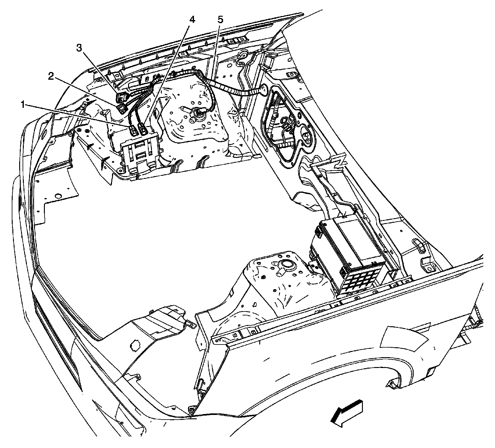

RHD
Harness Routing Views (RHD)
I/P Harness Routing - Front Engine Compartment

1 - X102
2 - Battery
3 - Battery Current Sensor
4 - X103
5 - G101
6 - X116
7 - X118
8 - X117
9 - Fuse Block - Underhood X2
I/P Harness Routing - Instrument Panel Inlines

1 - X207
2 - X206
3 - X204
4 - X203
5 - X201
I/P Harness Routing - X321

1 - Steering Column Assembly
2 - X321
3 - HVAC Module
X321

1 - HVAC Module
2 - X321
I/P Harness Routing - X202

1 - Ignition Switch
2 - X202
Body Harness Routing - Front Engine Compartment

1 - X118
2 - X105
3 - X101
4 - X117
5 - Body Harness